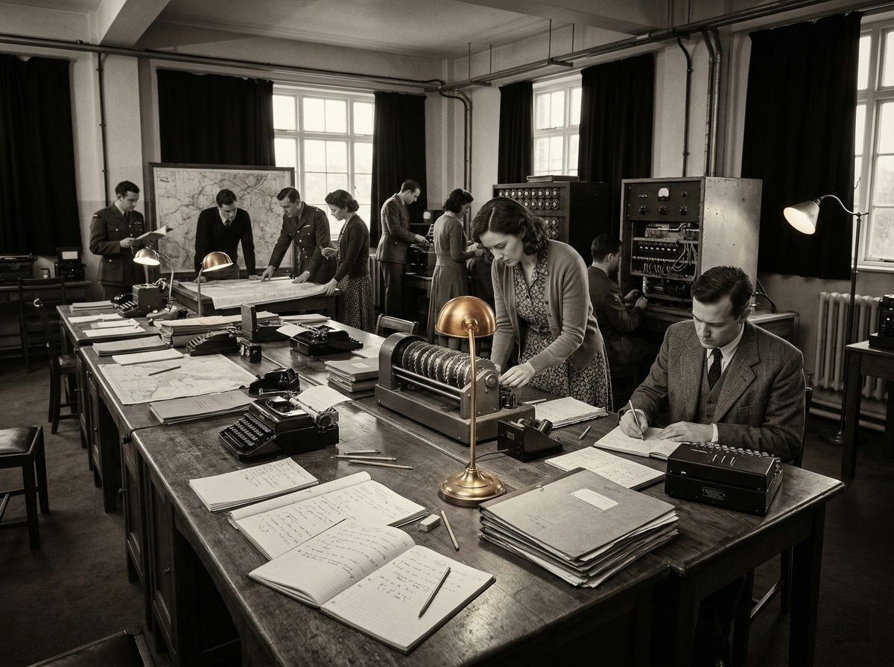

În 1939, un tânăr matematician britanic a fost chemat la Bletchley Park. Nu era soldat, nu era diplomat, dar avea o minte care putea învinge cel mai complex cod de criptare din lume. Se numea Alan Turing.
Tensiunea centrală a vieții lui a fost lupta între genialitate și persecuție. A creat mașina care a descifrat Enigma, codul nazist, scurtând cel de-Al Doilea Război Mondial cu cel puțin doi ani și salvând milioane de vieți.
Dar nu a fost recunoscut. Lucrul său a fost clasificat, a devenit secret de stat. Nimeni nu a știut ce a făcut, nimeni nu a știut cât de important a fost.
Apoi a venit persecuția. Era homosexual, ceva ilegal în Marea Britanie anilor 1950. A fost arestat, judecat, condamnat. I s-a dat alegerea: închisoare sau tratament cu estrogeni pentru a reduce libidoul. A ales tratamentul.
Un detaliu pe care biografiile îl trec cu vederea: Alan a continuat să lucreze, să inoveze, să creeze, chiar dacă tratamentul îi distrugea corpul. A creat conceptul de computer, a propus un test pentru inteligența artificială, a imaginat viitorul.

A murit în 1954, la 41 de ani, de otrăvire cu cianură. Poate a fost accident. Poate a fost sinucidere. Nimeni nu știe sigur. Nimeni nu a vrut să știe.
Ce moștenim de la el? Geniul, curajul, tragedia. Un om care a salvat lumea, dar nu s-a putut salva pe sine. Un om care a fost persecutat pentru cine era, nu pentru ce a făcut.
Alan Turing nu a fost doar un matematician, a fost un om care a demonstrat că geniul vine cu un preț, că societatea nu acceptă mereu ce e diferit, că persecuția poate distruge orice, chiar și cea mai strălucitoare minte.